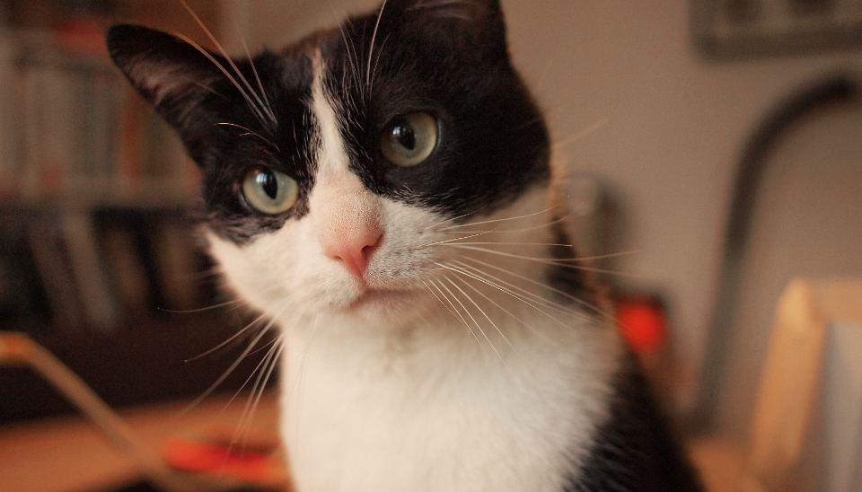
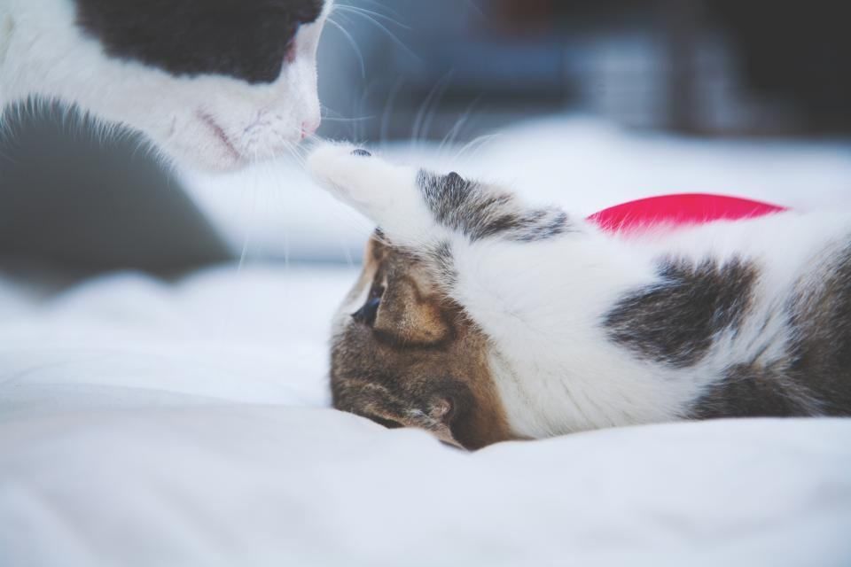
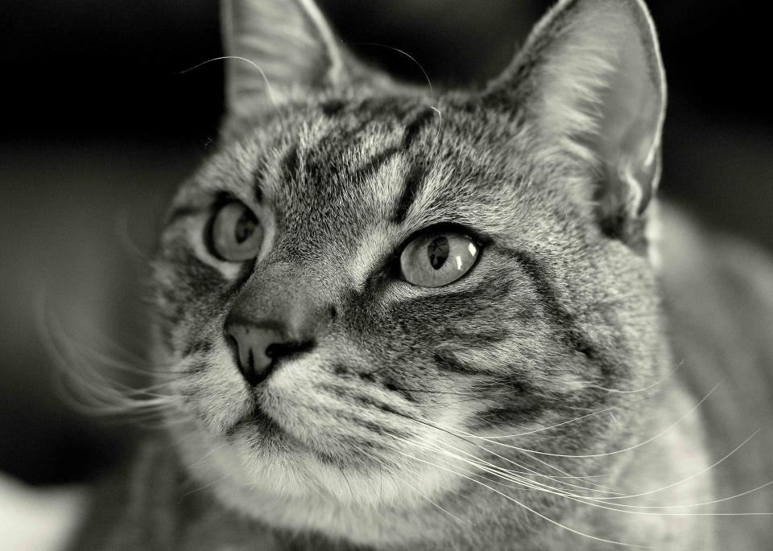
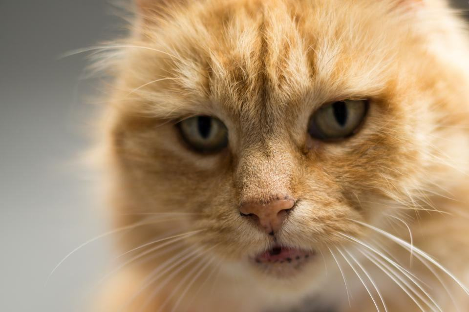
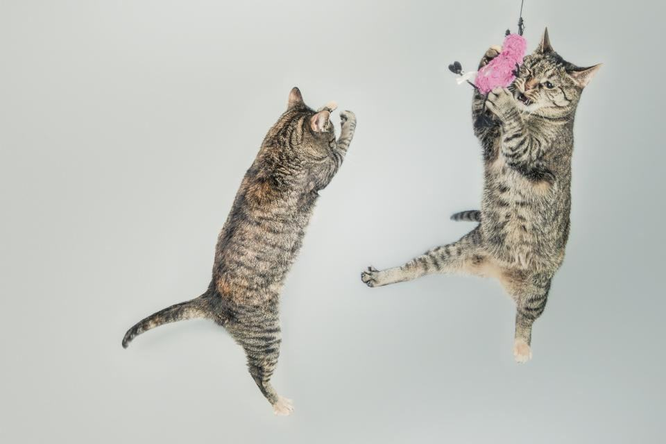
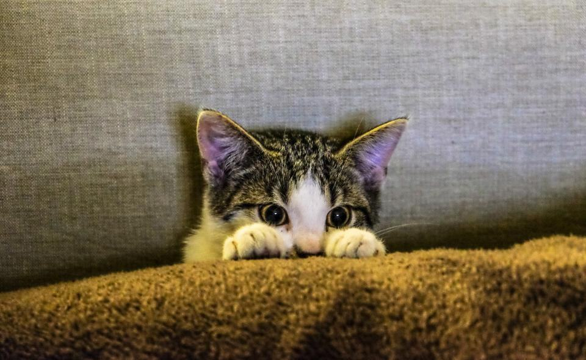
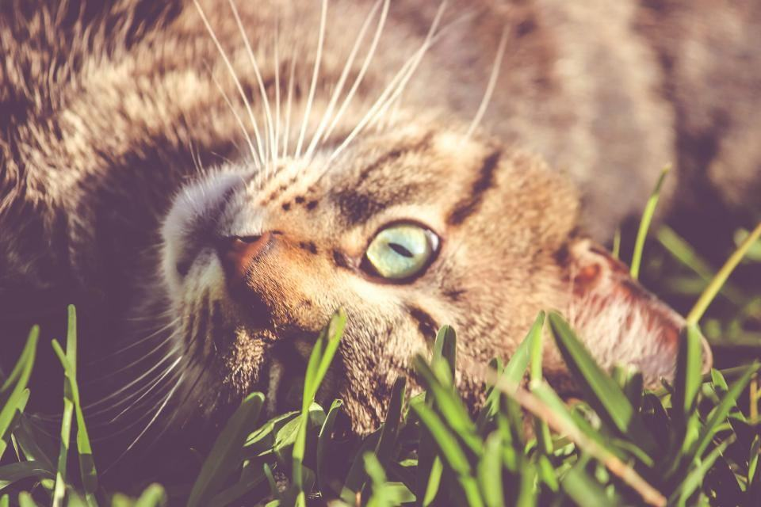
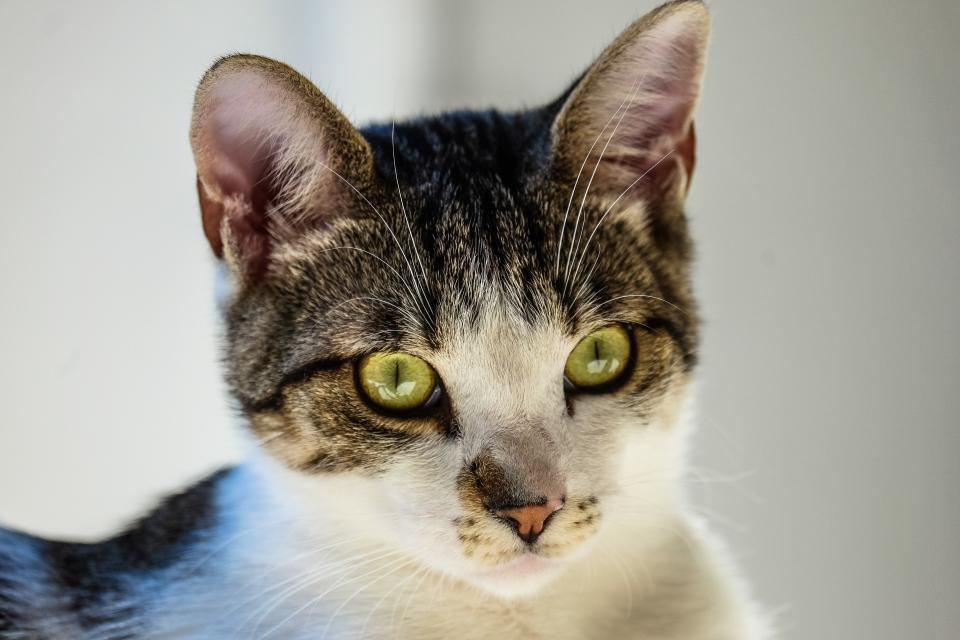

Behandlingar
Katter är känsliga för lukter, så vi har aldrig haft en hund i lokalen. Behandlingsrummet är ljudisolerat, fönen är en lågljudsmodell på 52 decibel och vi använder feromondoftare i väntrummet. Vi tar högst fem katter om dagen.
Vad behöver katten hjälp med?

Lejonklipp
Populärast för långhåriga katter som tovar sig snabbt eller har svårt att sköta pälsen själva. Vi klipper med kam på 5 millimeter så att huden aldrig blir bar.
Pälsen växer ut igen på tre till fyra månader.

Avfiltning utan narkos
Många katter sövs på klinik för att få bort tovor. Vi tar bort filten i korta pass med maskin och kam, med pauser i en mörk transportbur mellan passen.
Mycket svår filt kan kräva två besök med en veckas mellanrum.

Perser och exotic
Platta ansikten ger tårrännor och fet päls som behöver badas regelbundet. Vi badar med avfettande schampo och torkar ansiktet med koksaltlösning.
Rekommenderat intervall är var sjätte till åttonde vecka.

Seniorkatter
Äldre katter med artros slutar ofta tvätta ryggen och bakdelen. Vi klipper sanitärt runt baken och kammar ut den döda pälsen liggande.
Vi samarbetar med två veterinärer i Linköping kring katter med sjukdomar.
Så går ett kattbesök till
- 1

Tyst ankomst
Katten bärs direkt in i behandlingsrummet och får sitta kvar i buren med öppen lucka i fem minuter.
- 2

Hälsokoll
Vi känner igenom huden och kollar öron, klor och tänder innan vi börjar.
- 3

Korta pass
Vi arbetar i pass på högst femton minuter och låter katten vila i buren däremellan.
- 4

Hem med rapport
Du får en skriftlig rapport om pälsen, huden och när nästa besök bör vara.